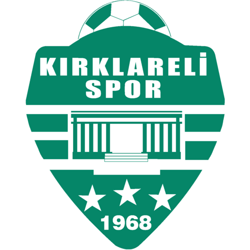

GURURUMUZ KIRKLARELİSPOR
Lig Geçmişi
Kırklarelispor, 1968 yılında yeşil-beyaz renklerle kurulan futbol takımı. 2. Lig'de mücadele etmektedir.
1969-1970 sezonunda Türkiye 3. Futbol Ligine katılan kulüp, uzun yıllar 3. Lig'de oynadı. 1980 senesinde 3. Lig kaldırıldığı için Türkiye 2. Futbol Ligine (şu anki 1. Lig) alındı. 1981-1982 sezonu sonunda 2. Lig'de sonuncu olarak 3. Lig kaldırılmış olduğundan doğrudan Kırklareli Amatör Ligi'ne düştü. 1982-1983 sezonu sonunda terfi maçlarında başarılı olarak, 3. Lig olmadığı için, direkt olarak Türkiye 2. Futbol Ligine çıktı. 1987-1988 sezonu sonunda 2. Lig'den yeniden kurulmuş olan 3. Lig'e düştü. 1992-1993 sezonu sonunda 3. Lig'den tekrar Kırklareli Amatör Ligi'ne düştü. İki yıllık bir aranın ardından, 1994-1995 sezonu sonunda amatörde şampiyon olup yeniden 3. Lig'e döndü.
1999-2000 sezonunda 3. Lig 8. Grup'ta şampiyon olarak Türkiye 2. Futbol Ligine (şu anki 1. Lig) çıktı. Aynı yıl küme düşen Kırklarelispor, 2001-2002 sezonunda yeni kurulan 2. Lig'de oynadı. 2001-2002 senesinde 3. Lig'e, hemen bir sezon sonra 2002-2003 yılında da amatör kümeye düştü.
2009-2010 3. Lig'e yükselme müsabakalarında, gruplarında şampiyonluk kazanan 5 takımdan biri olarak, 2010-2011 sezonundan itibaren 3. Lig'de oynamaya hak kazandı. 3. Ligdeki ilk yılında 15 Mayıs 2011 tarihinde Orhangazispor'u Bursa'da 0-1 yenerek Grubunda Şampiyon oldu ve 2. Lig'e yükseldi. 2011 yılından bu yana 2. Ligde mücadele etmektedir.
Türkiye Kupası Geçmişi
Kırklarelispor, 1984-1985 sezonunda Türkiye Kupasına katılmış, Üsküdar Anadolu, Galata SK takımlarını elemiş, üçüncü kademede Fenerbahçe ile karşılaşmış ve evinde 4-2, rövanşta ise deplasmanda 4-0 yenilerek kupaya veda etmiştir.
2019-2020 sezonunda Türkiye Kupasına üçüncü turdan başlamıştır. Bu turda 3. Lig takımı 1954 Kelkit Belediyespor'u 1-0 mağlup ederek 4. tura yükselmiştir. Bu turda da Süper Lig takımı Ankaragücü'nü yine 1-0 mağlup ederek Beşinci tura yükselen Kırklarelispor, yine Süper Lig takımı Gaziantep FK takımı ile çift eleminasyon sisteminde oynayıp, evinde 2-1 mağlup etmiş, deplasmanda 3-2 mağlup olmuş fakat deplasman golü kuralı ile son 16'ya kalmıştır. Bu turda yine Süper Lig takımı Başakşehir FK ile karşılaşmış, ilk maçı deplasmanda Fatih Terim Stadyumu'nda 79. dakikada yediği golle 1-0 geriye düşmüş fakat 90+5'te bulduğu golle 1-1 berabere kalmıştır. Bu maçın rövanşında Başakşehir FK ile evinde 0-0 berabere kalarak, tarihinde ilk kez Türkiye Kupası'nda çeyrek finale yükselme başarısını göstermiştir. Çeyrek finalde ise Süper Lig takımı Fenerbahçe ile 35 yıl aradan sonra, Türkiye Kupası'nda tekrar eşleşmiştir. 5 Şubat 2020 tarihinde evinde Fenerbahçe ile oynadığı ilk maçta 3-0 yenik ayrılmıştır. 11 Şubat 2020 tarihinde Fenerbahçe Ülker Stadyumunda yapılan rövanş maçında sahadan 1-0 yenik ayrılarak kupaya veda etmiştir.